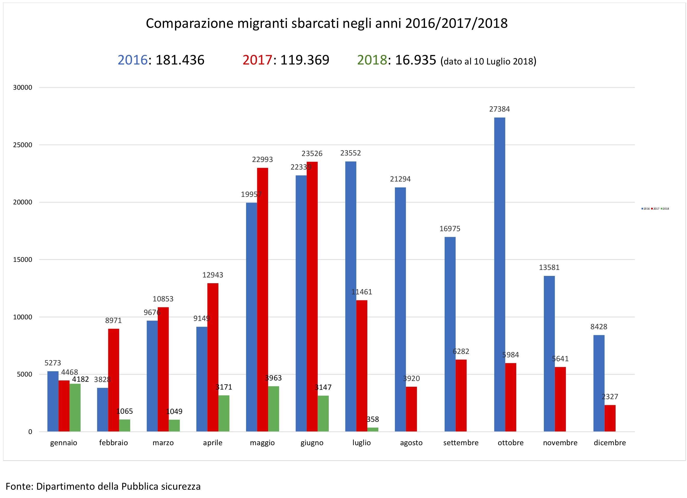
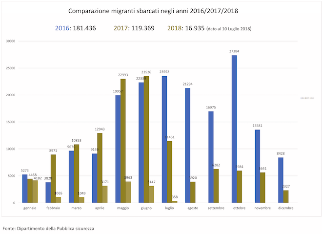

Si consideri il seguente grafico pubblicato dal ministero dell'interno in un cruscotto statistico relativo a Sbarchi e accoglienza dei migranti, il 10 Luglio 2018.
Analisi
Analizzare il grafico sopra riportato secondo gli aspetti seguenti:Question:- è stata definita chiaramente o è evidente una domanda (o più di una) a cui la visualizzazione risponde?
L'obiettivo del grafico è piuttosto chiaro ed è sintetizzato bene dal titolo: il confronto del numero di migranti sbarcati in Italia nei diversi mesi degli anni 2016-2018.
Data:- i dati mostrati sono validi e supportano la domanda?
In generale i dati supportano bene la domanda con due limitazioni:
- i dati di Luglio 2018 sono incompleti (si riferiscono a 10 giorni e non a tutto il mese) perciò non possono essere confrontati direttamente con quelli degli anni precedenti;
- i dati completi del 2018 si fermano a Giugno perciò non è possibile un confronto completo tra gli anni, al massimo tra i semestri.
Visual:le caratteristiche visuali sono usate appropriatamente?
Riguardo gli aspetti visuali si valuti l’integrità visuale secondo i tre aspetti:
Proportionality:- le misure sono riportate in maniera uniformemente proporzionale?
Le barre rappresentano in maniera proporzionale i valori, infatti l'asse y parte correttamente da 0.
Utility:- tutti gli elementi presenti nel grafico trasmettono informazioni utili?
In generale tutti gli elementi del grafico sono utili.
Esiste una apparente doppia legenda: quella microscopica (e praticamente inutile) sulla destra del grafico e quella rappresentata dai numberi di sbarchi nei tre anni riportata sopra il grafico.
I numeri riportati sopra le barre potrebbero essere omessi, sebbene siano utili per conoscere i valori esatti che altrimenti l'altezza delle barre non potrebbe trasmettere accuratamente.
Clarity:- i dati del grafico sono chiaramente identificabili e comprensibili (opportunamente descritti)?
Il grafico presenta alcune limitazioni:
- innanzi tutto l'uso delle barre focalizza l'attenzione sui singoli valori e non permette un'agevole percezione dell'andamento nel corso degli anni;
- i numeri riportati sopra le barre sono di difficile lettura in quanto sono occasionalmente e parzialmente sovrapposti alle barre adiacenti;
- la legenda esplicita (a destra) ha dimensioni assolutamente insufficienti e rappresenta un elemento di disturbo più che di supporto al grafico;
- la scelta dei colori rosso e verde con luminosità simile e posti l'uno accanto all'altro
è pessima per i lettori affetti da cecità al colore che hanno difficoltà a distinguerli.
Come è possibile verificare nella seguente
simulazione:
 - la legenda implicita che è data dalle cifre annuali sopra il grafico è di difficile lettura in quanto i colori vengono usati solo per l'anno e non sono riportati in un quadrato pieno che possa richiamare visivamente le barre;
- il dato di luglio 2018 viene riportato senza nessuna annotazione che possa mettere in guardia il lettore da una comparazione falsata con gli altri valori;
- analoga osservazione vale per i totali annuali riportati solamente come numeri sopra il grafico.
Design
Riprogettare la visualizzazione in modo da risolvere i problemi evidenziati nell'analisi.
Tutti i dati necessari alla visualizzazione devono essere inseriti in un file dati con formato JSON o CSV.
Soluzione 1: diagramma a linee.
Soluzione 2: diagramma a linee per semestre
Soluzione 3: diagramma a linee / slopechart per mese negli anni
Inserire le risposte all'interno del presente file,
in particolare negli elementi <div>
che hanno come classe answer.